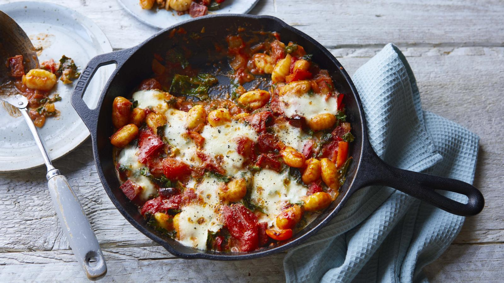

Gnocchi

Description
Simple and quick tomato, chorizo and cheese based Gnocchi dish by Miguel Barclay.
Ingredients
- Tin of Chopped Toms
- 200g Chorizo
- Bag of Gnocchi
- Wedge of Blue Cheese
- Salt
- Ground Pepper
Method
- Pre-heat oven to 200C
- Empty bag of gnocchi into an oven safe dish.
- Add tinned tomatoes.
- Chop and add chorizo.
- Add salt and pepper.
- Stir well and put in oven for 20 minutes.
- Remove from oven and sprinkle blue cheese over the top.
- Return to oven for 10 minutes.
- Remove from oven, serve.